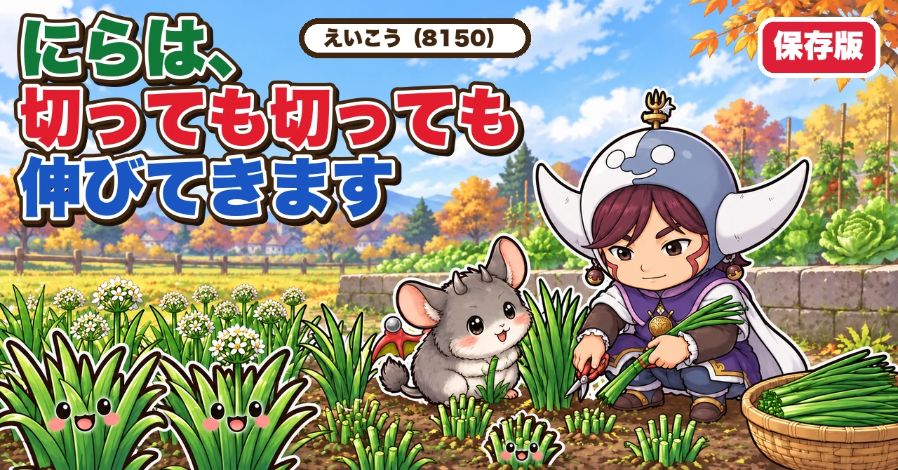
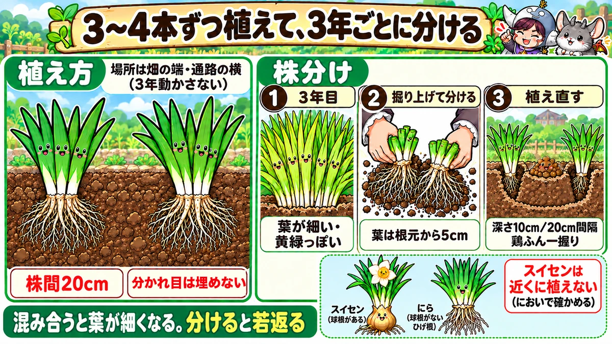
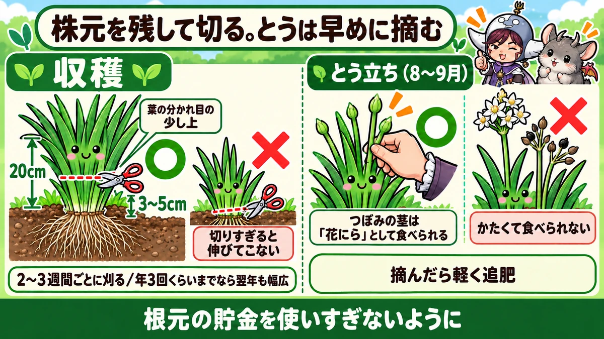
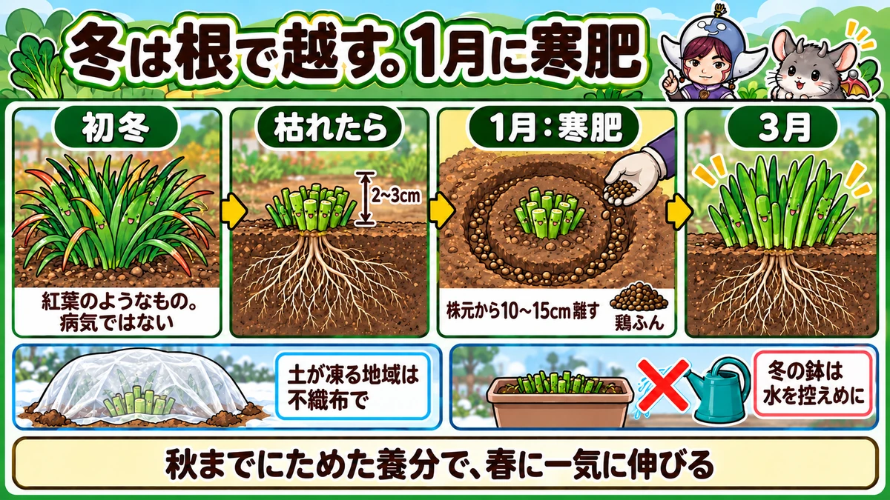

にらの育て方｜苗の植え方、収穫、とう立ち、冬越し、株分け、コンパニオンプランツ

📖 この記事の目次
この記事で分かること
- にらは、一度植えると3年ほど同じ場所で、1年に何度も収穫できる多年草の野菜です。
- 種から育てると、収穫できるのは2年目から。苗や株を手に入れて始めるのが近道です。
- 植えるのは、畑の端や通路の横など、3年間動かさなくてよい場所です。
- 苗は3〜4本ずつまとめて植えます。収穫は、株元を少し残してはさみで切ります。
- 夏の終わりに花の茎が立ったら、早めに摘みます。つぼみの茎は「花にら」として食べられます。
- 冬に葉が枯れたら短く切り、寒肥をやって春を待ちます。
- 3年ほどたって葉が細くなってきたら、株分けをして植え直します。
- トマトやなすの根元に植えると、病気を防ぐ助けになるといわれます。
- 葉がよく似たスイセンとの取り違えには、くれぐれも注意します。
にらは、炒め物や餃子、みそ汁と、少しあるだけで料理の幅が広がる野菜です。しかも、一度植えれば何年も、切っても切っても伸びてきます。狭い家庭菜園でも、畑の片すみにあるととても重宝します。
一方で、「1年目に全然穫れなかった」「年々葉が細くなってきた」「花が咲いたら葉がかたくなった」という声もよく聞きます。にらは、ほかの野菜と違って「何年も付き合う」野菜です。1年の流れと、数年ごとの手入れを知っておくと、ずっと幅の広いやわらかいにらを穫り続けられます。この記事では、始め方から収穫、冬越し、株分けまで順番に書いていきます。
早見：にらの基本
にらの1年
- 春：新しい芽が伸びてくる。株を植えるなら春先まで
- 初夏〜秋：収穫の季節。葉が20cmほどになったら切る
- 夏の終わり〜秋：花の茎が立つ。早めに摘む
- 初冬：葉の先から枯れはじめる。最後の収穫
- 冬：地上の葉は枯れ、根だけで冬を越す。寒肥をやる
何年も付き合う野菜
- 種からなら、収穫は2年目から
- 一度植えれば、同じ場所で3年ほど
- 3年ほどたったら株分けして、植え直す
植えつけの目安
- 苗：3〜4本をひとまとめにして1か所に植える
- 株間：20cmほどあれば十分、という説明が多い
- 場所：畑の端、通路の横、塀ぎわなど、ふだん使わない場所

にらの始め方
種から：収穫は2年目から
にらは種からも育てられます。春、3月ごろにタネをまき、苗を育てます。3か月ほどたった6月ごろには植えかえられる大きさになる、と説明されていました。
ただし、種から始めた年は、ほとんど収穫できません。1年目は収穫せずに株を大きく育て、2年目から収穫を始める、というのが基本です。種まきから収穫まで、最短でも1年かかる野菜だと考えておきましょう。
秋にまく方法も
春まきのほかに、10月にタネをまいて育てていた例もありました。その場合も、収穫が始まったのは翌年の夏で、最初の収穫までにはやはり1年近くかかっています。種から育てるなら、そのあいだ場所をふさぐことを覚悟しておきます。
苗から：植えて2〜3か月で収穫
すぐに収穫したいなら、苗から始めるのが近道です。春になると、ホームセンターなどでにらの苗が売られます。種まきから1年ほど育てた株を土から抜いた苗も売られていて、それを植えれば、2〜3か月で収穫できるようになるそうです。
株を分けてもらう
にらは、とても増えやすい野菜です。にらを育てている人は、数年ごとの株分けで株が余ることが多いので、知り合いに分けてもらって始める人も多い、と紹介されていました。
植える時期は、春なら早めに
春に苗から始めるなら、3月後半から4月初めには植えてしまうのがよい、と説明されていました。早く植えるほど、春のおだやかな日差しをたっぷり浴びて、根がぐんぐん育ちます。植えるのが遅れると、夏の厳しい暑さの影響で、根の伸びが悪くなることがあるそうです。
できるだけ大きな苗を選ぶ
苗から始めるときに、いちばん大事だとされていたのが、苗の大きさです。小さな苗を植えると、その年は小さな葉しか出てこず、それを摘むと根が育たなくなります。背丈が高く、そのまま収穫できそうなくらいの大きな苗を選べば、植えた年の後半から収穫を楽しめる、と説明されていました。
苗は、根がしっかり回ったものでよい
夏野菜の苗では、ポットの中で根がぐるぐる回りすぎたものは避けたほうがよいとされます。一方、にらの場合は、白い根がポットの中にしっかり回っているくらいの苗で問題ない、と説明されていました。にらは、まず根をしっかり張らせることが大切な野菜だからです。
植える場所と土づくり
3年動かさない場所を選ぶ
にらは、一度植えると3年ほどはそのまま育てます。だから、植える場所選びがとても大事です。
畑のまん中に植えてしまうと、毎年の作付けのじゃまになります。畑の端、通路の横、塀ぎわの空き地など、ふだん野菜を植えない場所が向いています。にらは場所を選ばずよく育つので、こうした半端なスペースを生かせる野菜でもあります。
肥料は「3年分」の気持ちで
にらは、肥料が好きな野菜です。しかも、3年ほど同じ場所で育てます。植える前に、3年分の肥料を入れるつもりで、しっかり土づくりをしておくのがよい、と話していた方もいました。
動画で紹介されていた量の一例は、1㎡あたり牛ふんたい肥2Lと鶏ふん150ccです。土とよく混ぜ、肥料にむらが出ないようにします。むらがあると、育ちのよいところと悪いところが出てしまうからです。
酸性の土が苦手
にらは、酸性の土に弱い野菜です。酸性に傾いている畑なら、有機石灰を入れておきます。
深く耕して、2〜3週間待つ
にらは根を深く張る野菜です。根の張りがよくなるように、できるだけ深く耕します。肥料を入れたら、すぐに植えずに2〜3週間ほど待ち、肥料を土になじませてから植えつけます。待つあいだ、株はポットに仮植えしておけば傷みません。
マルチは張らなくてもよい
マルチを張って植える方法もありますが、何年も同じ場所で育てるにらでは、マルチがかえって手入れのじゃまになることがあります。マルチを張らずに植え、乾燥を防ぐために株元にわらを敷く方法もすすめられていました。マルチがなくても問題なく育つので、雑草の手入れと乾燥にだけ気をつけます。
植えつけ
3〜4本ずつ、まとめて植える
にらの苗は、1本ずつではなく、3〜4本をひとまとめにして1か所に植えます。にらは、寄り添いながら育つ性質があり、何本かまとめたほうがよく育つといわれます。
株と株のあいだは、20cmほどあれば十分です。黒いマルチを張る場合は、15cm間隔の穴に1株ずつ、または30cm間隔で2株ずつ植える方法も紹介されていました。
2列に植えるとき
うねに2列で植えると、場所を効率よく使えます。その場合は、株と株のあいだを20〜25cm、列と列のあいだを30cmほどあける、という目安が紹介されていました。
冬に植えるのもよい
株を植えるのは、にらが休んでいる2月から3月がいちばんよい、という説明もありました。この時期に植えた株は、6月ごろに新しい芽が伸び、7月ごろから収穫できるようになるそうです。にらは寒さに強いので、植えたあとは不織布をかけておく程度で、ビニールのトンネルまでは要らない、とのことでした。
植える深さ
葉のつけ根の白い部分が埋まるくらいまで土をかけます。ただし、葉が分かれているところは、土に埋めないように土の上に出しておきます。
葉が長すぎて植えにくいときは、葉を短く切ってから植えてもかまいません。根が長すぎるときも、少し切りそろえておくと、新しい根が出てきて早く根づく、と説明されていました。
植えたあとの水
植えた日には、たっぷり水をやります。にらは根を深くまで伸ばすので、表面だけでなく、下までしみこむようにやるのがこつです。
寒い時期に植えたなら、根づくまで不織布を上からかけておくと、育ちがよくなります。
植えた年は、穫りすぎない
苗から植えた年は、伸びてきた葉をつい摘みたくなります。でも、小さいうちに葉を摘んでしまうと、根が育ちきらず、その年も翌年も収穫量が落ちる、と注意されていました。植えた年は、まず根をしっかり育てることを優先します。

収穫
収穫の目安
葉の長さが20cmほどになったら、収穫どきです。伸びすぎると、葉がかたくなって味も落ちます。にらは、収穫のタイミングがとても大切な野菜です。
株元を少し残して切る
収穫は、株ごと抜くのではなく、はさみで葉を切り取ります。株元の、葉が分かれているところより少し上、地面から3〜5cmほどを残して切ります。
根と株元が残っていれば、そこからまた新しい葉が伸びてきます。にらは「根が残っていればずっと生き続ける」野菜です。
穫り遅れないことが大事
秋になって気温が落ち着くと、にらにとって育ちやすい季節になり、ぐんぐん伸びます。そのまま放っておくと、葉がかたくなったり、とうが立ったりしやすくなります。葉の長さが15〜20cmほどになったら、早めに刈り取ってしまうのがよい、と説明されていました。
刈り取ったあとは、2週間から1か月ほどでまた収穫できる長さに伸びてきます。冬に収穫が終わるまで、このペースで刈り取りを続けます。
春いちばんの葉は、かたいことが多い
冬を越して春に最初に伸びてくる葉は、かたくてあまりおいしくないことが多い、という説明もありました。食べられないわけではありませんが、最初の葉は一度刈り取ってしまい、次に伸びてくる葉から食べるとよい、ということです。
切る位置に気をつける
株元ぎりぎりで切りすぎると、そのあと新しい葉が出てこなくなり、株が枯れてしまうこともあります。葉が分かれているところより少し上、地面から2〜3cm以上は残して切るように注意されていました。
2〜3週間ごとに刈る
やわらかいにらを穫り続けるには、伸ばしすぎないことです。2〜3週間ごとに刈り取るサイクルをくり返すと、ずっとやわらかくおいしいにらを穫り続けられる、とすすめられていました。
いちばんの旬は秋
夏の終わりにとうを摘み、そのとき葉もいっしょに刈り取っておくと、9月の初めからまた葉が伸びてきます。そうして伸びた葉が収穫どきを迎える10月の終わりから11月にかけてが、にらのいちばんのシーズンになる、と説明されていました。
何回まで穫るか
にらは、うまくいけば1年に4〜5回ほど収穫できます。ただ、あまり何度も切ると、根に養分がたまらなくなり、翌年の葉が細くなってしまいます。翌年も幅の広いにらを穫りたいなら、1年に3回くらいにとどめておくとよい、という説明もありました。
収穫したら、外側の皮をむく
収穫したにらの、外側の色が変わった葉は、皮ごとむいてしまいます。根元の汚れた部分もいっしょにきれいになるので、洗う手間が省けます。葉の先の黄色く傷んだところは、指でちぎっておきます。
追肥
収穫をくり返すと、株は体力を使います。月に1回くらいを目安に、株元から少しはなれたところに、ひとつまみの肥料を入れて土をかけておきます。土が乾いていたら、追肥のあとに水をやります。
追肥の入れ方
追肥の量が多すぎると、にらにえぐみが出たり、虫や病気がつきやすくなったりします。株元から10cmほどはなれたところに、深さ1cmくらいの浅い溝を作り、そこに鶏ふんを1株あたりひとつまみほどぱらぱらとまいて、土をかぶせます。葉が弱々しい、芽の伸びが悪い、というときは、肥料が足りていないことがあるので、この方法で追肥してみます。
株の周りを軽く耕す
にらの根は、四方に広がっていきます。土がかたかったり、空気の通りが悪かったりすると、根が伸びにくくなります。株元から20〜30cmほどはなれたところを、軽く耕しておくと、根が張りやすくなる、と説明されていました。すでに伸びている根を切らないように、そっと作業します。
とう立ちと花にら
夏の終わりに、花の茎が立つ
にらは、夏の終わりから秋にかけて、花の茎（とう）を伸ばしはじめます。早いものは8月ごろから立ちはじめ、8〜9月に多く見られます。
とうが立つと、株は花を咲かせ、種をつけることに養分を使います。そのぶん、葉がかたくなり、味も落ちてしまいます。
とうが立つしくみ
にらは、ある程度の期間、日の光と温度を受けると、花を咲かせる準備に切りかわります。春以降にこの切りかえのしくみが入り、8月下旬から9月ごろに実際にとうが立ちはじめる、と説明されていました。いったん始まると、何度かくり返しとうが立つことがあります。
とうは、見つけたら摘む
とうが立ったら、早めに摘み取ります。株の背丈がまだ小さければ、とうだけを切ります。株全体が収穫できる大きさなら、株元を2〜3cm残して、葉ごとまとめて収穫してしまいます。
とうを摘むと、また葉のほうに養分が回るようになります。摘んだあとは、軽く追肥をしておきます。その後も、あまり大きくしすぎず、こまめに収穫していくと、11月ごろまで収穫を続けられます。
一度、全部刈り取る方法も
7月から8月にかけてとうが立ち、花が咲きはじめたら、一度株全体を刈り取ってしまう、という方法も紹介されていました。刈り取ったあとに追肥をしておけば、秋にまた新しい葉が伸びてきて、秋の収穫につながります。
つぼみの茎は「花にら」
摘んだとうは、捨てずに食べられます。つぼみのついたやわらかい茎は、「花にら」として売られていることもあるものです。しゃきしゃきした歯ごたえがあり、炒め物にぴったりだと紹介されていました。
ただし、花が咲いて時間がたった茎は、かたくて筋っぽくなります。食べるなら、つぼみのうちに摘むのがおすすめです。
種で増やすこともできる
花が終わると、黒い種ができます。この種をまいて増やすこともできます。ただ、同じ株から来年もよい葉を穫りたいなら、種をつけさせずに早めにとうを摘んだほうが、根に養分がたまります。

冬越し
冬の前は、株の様子で決める
秋の終わり、冬までにあと何回か収穫できるころには、株の様子をよく見ておきます。葉が小さい、かたい、伸びが悪い、という株は、収穫をあえて控え、枯れるまで葉に光を受けさせて、根を育てることを優先する、という考え方が紹介されていました。
もうひとつの手は、秋のうちに株分けしてしまうことです。まだ気温が暖かいうちなら、分けた株もしっかり根づき、翌年の春の収穫に間に合いやすい、という説明でした。収穫を続けるか、株を休ませるか、株を分けるか。株の状態で選びます。
冬は、葉が枯れて根で冬を越す
にらは寒さに強い野菜ですが、冬になると地上の葉は枯れます。気温が5℃を下回るようになると枯れてくる、と説明されていました。葉が先のほうから枯れて赤っぽくなることがありますが、これは紅葉のようなもので、病気ではありません。
葉は枯れても、根は生きています。秋までに葉で作った養分を根にためこみ、春になるとその養分で一気に新しい芽を伸ばします。
枯れたら、短く切る
葉がすっかり枯れたら、地上に2〜3cmほど残して切りそろえます。3月ごろになると、新しい芽が自然に出てくるので、思いきって切ってしまって大丈夫です。
土が凍る地域は、不織布で守る
冬に土がすっかり凍ってしまう場所では、根が傷んで、翌年うまく育たなくなることがあります。12月の終わりごろから、不織布をかけておくと、冷えをある程度やわらげられます。
- 不織布はぴんと張らず、ふわっと余裕をもってかける
- 四すみをピンでとめ、風で飛ばされないように、すそに土をのせる
- 不織布がなければ、落ち葉などでおおっても代わりになる
- 雨で土が流れて株元がむき出しになっていたら、土を寄せて盛り直しておく
マルチを張って育てている場合は、不織布をかけなくても大丈夫だそうです。
寒肥をやる
冬のあいだにやっておきたいのが、寒肥（かんごえ）です。春の伸び出しがぐっとよくなります。
- 株元から10〜15cmほどはなれたところに、株を囲むように深さ3cmほどの溝を丸く掘る
- 溝に鶏ふんを2つかみほどまく
- 土をかぶせる
- 土が乾いていれば、肥料をまいたところに水をやる
寒肥のあと、不織布を上からかけておくと、冬越しが安心です。
寒肥は1月中に
寒肥は、やる時期も大切です。鶏ふんを1月中にまいておくと、2月に土の中で分解が進み、3月ごろに効きはじめます。ちょうどにらが本格的に芽を伸ばしはじめるころに間に合う、というわけです。まくのが遅れると、芽が出るころに効いてこなくなります。
量は、1株あたり大きめのスプーンに山盛り1杯ほどで十分、という説明もありました。まいたあとは軽く土を戻し、上からわらや枯れ草をかけておくと、寒さよけと乾燥よけになります。
プランターでも育つ
にらはプランターでも育てられます。深さ10〜15cmほどのプランターで十分だ、と紹介されていました。畑の植えかえで場所が足りないときに、余った株をプランターに移しておく使い方もできます。
プランターの冬越しは、水を控えめに
プランターで育てている場合も、冬の扱いは畑と同じです。葉が枯れるのに任せておけば、根に養分があれば春にまた芽が出ます。気をつけたいのは、水のやりすぎです。葉のない冬に水をやりすぎると、根が腐ってしまうことがあります。
株分け
3年たったら、葉が細くなる
にらを同じ場所で何年も育てていると、株がどんどん増えて、根が絡み合ってきます。株どうしで肥料の取り合いが起き、葉の幅が細くなり、色も黄緑がかってきます。スーパーで売っているにらより細い、と感じたら、株が混み合っているしるしです。
そこで、3年ほどたったら株を掘り上げて分け、植え直します。これが株分けです。株分けをくり返せば、にらは半永久的に育て続けられます。
株分けの時期
株分けの時期は、説明によって少し違いがありました。
- 冬（12月〜2月）：葉が枯れて休んでいる時期。掘り上げて植え直すのに向いている
- 春先（2月下旬〜3月）：いちばん寒い時期を過ぎてから。冬の寒さを避けたい場合
- 秋：春と並んで、株分けの時期として挙げられていた
また、葉が枯れるのを待たなくても、芽がしっかりしていれば株分けして植えつけて大丈夫だ、という説明もありました。春になってから動かすと出だしが遅れるので、冬のうちに済ませておくとよい、という意見もあります。
株分けの手順
- 株の周りの土を多めにつけて、根をなるべく切らないように掘り上げる
- 根についた土を落とす
- 葉は根元から5cmほど残して切りそろえる
- 両手で株を割るようにして、3〜4本ずつに分ける。うまく分かれないところは無理に分けなくてよい
- 新しい場所に、3〜4本ずつまとめて植える
にらは丈夫なので、多少根が切れても問題ない、と説明されていました。
植え直し方
株分けした株を植えるときの手順も、くわしく紹介されていました。
- 深さ10cmほどの溝を掘る
- 分けた株を2〜3株ずつ、20cmほどの間隔で溝に置く
- 株と株のあいだに、鶏ふんを一握りずつ置く。肥料が根に直接ふれないように、上に軽く土をかける
- にらは弱い酸性から中性の土を好むので、石灰をまいておく
- 株がななめにならず、まっすぐ立つように土を戻し、上から押さえて平らにする
土をかけすぎて、深く植えすぎないように気をつけます。植えたあとは、ねぎの苗を植えたときと同じで、特に水をやる必要はないそうです。ただ、雨がまったく降らない日が続くときは水をやります。
できれば、別の場所に植える
掘り上げた場所にそのまま植え直してもかまいませんが、できれば別の場所を用意して、新しく土づくりをしてから植えるほうがよい、とされています。土づくりが落ち着くまでの2週間ほどは、分けた株をポットに仮植えしておきます。
夏に植え直す簡単な方法
根ごと抜いてしまったにらは、根元を少し長めに残して切り、別の場所に植え直すこともできます。浅いくぼみに並べて、上から土をかぶせ、水をたっぷりやるだけです。9月上旬に植え直したにらが、2週間ほどでぐんぐん伸びた例も紹介されていました。
コンパニオンプランツとしてのにら
トマトやなすの根元に植える
にらは、ほかの野菜の病気を防ぐ助けになる野菜として、よく名前が挙がります。トマト、なす、ピーマン、きゅうり、かぼちゃなどを植えるとき、同じ植え穴ににらの株をいっしょに植える方法です。
にらの根の周りには、病原菌の働きを抑える微生物がすんでいるといわれます。トマトやなすの根とにらの根が絡み合うように植えることで、青枯病などの土の病気を防ぐ効果が期待できる、と紹介されていました。
植え方のこつは、根を絡ませること
- 植え穴の底に、にらの株を置く
- にらの根が内側を向くようにする
- その上に、トマトやなすの苗をのせて植える
ポイントは、根と根をくっつけることです。種から育てた小さな苗では根の張りが弱く、効果が出にくいので、根の張った株を使うほうがよいとされています。
ほかにも期待されていること
にらの根は水をよく吸うので、大雨のあとにトマトの根の周りが水びたしになるのを防ぐ助けになる、という説明もありました。また、独特のにおいで虫を遠ざける効果を期待する人もいます。
トマトの根元ににらを植えて育てたところ、虫がとても少なかった、と話していたチャンネルもありました。ただ、そのチャンネルでも、ほかの工夫もしていたので、にらの効果かどうかははっきりしない、と慎重に話していました。混植は、確実に防げるものではなく、助けになるかもしれない工夫だと考えておくのがよいと思います。
豆とは、離して植える
にらにも、相性のよくない野菜があります。豆の仲間です。豆の根には、豆の育ちを助ける菌がすみついていますが、にらはその菌を遠ざけてしまう、と説明されていました。
にらは何年も同じ場所にあるので、植えた場所を忘れて、近くにスナップエンドウなどの豆をまいてしまうことがあります。にらの場所は、しっかり覚えておきましょう。
虫と病気
にらは、虫がつきにくい
にらは、ほかの野菜にくらべて虫の被害が少ない野菜です。ただ、まったく虫がつかないわけではありません。
黒いアブラムシに注意
ねぎの仲間につく、黒い色のアブラムシがいます。寒く乾いた気候を好み、2月後半ごろから少しずつ出てきます。にらやらっきょうにもつきます。
黒くて見つけやすいので、見つけたら早めに手を打ちます。みかんなどのかんきつ類の皮を細かく砕いて株元にまき、そのにおいでアブラムシを遠ざける方法が紹介されていました。皮が分解されるときに白いかびが生えることがありますが、問題はないそうです。
スイセンとの取り違えに注意
葉がそっくり
にらを育てるうえで、どうしても知っておいてほしいことがあります。スイセンの葉は、にらの葉にとてもよく似ています。花が咲く前の、葉だけのときは、見た目ではほとんど区別がつきません。
スイセンには毒があり、にらと間違えて食べてしまう食中毒が、毎年のように起きています。厚生労働省のまとめでは、2015年から2024年までの10年間で74件、227人が中毒になり、亡くなった方もいます。
見分け方
- におい：にらの葉をちぎると、にら特有のにおいがする。スイセンには、そのにおいがない
- 根元：にらはひげのような根。スイセンは土の中に球根がある
- 花：花が咲けば、まったく違う
いちばん確かなのは、においです。少しでも迷ったら、葉をちぎってにおいを確かめ、それでも分からなければ食べないことです。
同じ場所に植えない
にらを育てる畑や庭に、スイセンを植えるのはやめましょう。何年もたつと、どこに何を植えたかは意外と忘れてしまいます。にらは何年も同じ場所にある野菜だからこそ、近くに似た植物を置かないことが大切です。
説明が分かれるところ
植えたあとの水やり
にらは乾燥を嫌う野菜なので、定期的に水をやる、という説明がありました。一方で、植えたときにたっぷりやれば、そのあとは基本的に水やりは要らない、という説明もありました。
どちらも、植えた直後はたっぷりやる点は同じです。畑なら、雨が少なく乾いた日が続くときに水をやる、くらいに考えるとよいと思います。プランターは乾きやすいので、表面が乾いたらやります。
株分けの時期
冬の休眠中、春先、秋と、株分けの時期は説明によって違いました。どの時期でも、いちばん寒い時期と、真夏の暑い時期を避ければ、にらは丈夫に根づきます。
収穫する長さ
葉が20cmほどで収穫する、という説明が多い一方、15〜20cmで早めに刈る、25cm以上になってから地上5cmほどを残して刈る、という説明もありました。長く伸ばすほど1回の量は増えますが、そのぶんかたくなりやすくなります。やわらかさを優先するなら、短めで早めに刈るのがよいと思います。
株分けまでの年数
3年ほどで株分け、という説明が多い一方、3〜4年はそのまま収穫でき、5〜6年たつと葉が細くなったり味が落ちたりする、という説明もありました。年数より、葉の太さや伸び方を見て決めるのが確実です。刈ったあとに葉が伸びてくるまで時間がかかるようになったら、株が疲れてきたしるしです。
よくある失敗
1年目に穫りすぎた
植えた年に伸びた葉を何度も摘むと、根が育たず、翌年の収穫が減ります。1年目はがまんして、根を育てる年にします。
葉が年々細くなる
植えたままにして追肥だけしていると、株が混み合い、根が老化して、葉がだんだん細くなります。3年ほどを目安に株分けをします。
花を咲かせたままにした
とうを放っておくと、葉がかたくなり、収穫が続かなくなります。夏の終わりからは、とうが立っていないかをこまめに見ます。
植えた場所を忘れた
にらのある場所を忘れて、豆をまいたり、耕してしまったりすることがあります。目印の棒を立てておくなど、場所が分かるようにしておきましょう。
よくある質問
花が咲いてしまったら、もう食べられませんか
花が咲いた茎は、かたくて食べられません。ただ、花そのものは食べられる、と紹介されていました。天ぷらやあえものにすると楽しめるそうです。つぼみのうちなら、茎もやわらかいので、花にらとしていっしょに食べられます。
根元だけ残ったにらは、植えれば育ちますか
育ちます。にらは、根と株元が残っていれば、植えたところでまた葉を伸ばします。捨てたつもりのにらが、畑の横の土手で根づいて増えていた、という話も紹介されていました。それくらい生命力の強い野菜です。
冬に葉が赤くなったのは、病気ですか
病気ではありません。寒くなると、葉の先から赤っぽく色づきながら枯れていきます。紅葉のようなもので、心配はいりません。すっかり枯れたら、短く切りそろえて冬を越させます。
収穫したにらは、どう保つとよいですか
にらは、穫りたてがいちばん香りがよく、みずみずしいものです。切り口から水分があふれるほどの新鮮なにらは、家庭菜園ならではの味です。食べる分だけ、食べる日に刈り取るのがおすすめです。
学ぶ：にらが何度切っても伸びるわけ
1年目は、秋まで葉を茂らせる
種から育てたり、小さな苗を植えたりした1年目のにらは、なるべく収穫せず、葉をそのまま茂らせておきます。葉が光を受けて養分を作る期間は、11月から12月ごろまで続きます。そのあいだにしっかり根に養分をためさせることが、2年目以降のたくさんの収穫につながります。
養分の貯金箱は、根元にある
にらの株元の、葉のつけ根の白っぽい部分と、その下の太い根には、養分がたまります。にらは、葉で光を受けて作った養分を、この「貯金箱」にためこみます。
葉を切られても、貯金箱に養分が残っているので、それを使ってまた新しい葉を伸ばせます。これが、にらが何度切っても伸びてくるしくみです。
だから、穫りすぎると翌年に響く
ただ、貯金は使えば減ります。何度も葉を切ると、そのたびに貯金を使い、ためる時間がなくなります。そうすると、翌年は細くてかたい葉しか出てこなくなります。逆に、貯金がたっぷりたまった株からは、幅が広く、やわらかいにらが伸びてきます。
収穫を年に3回くらいにしておく、とうを早めに摘む、秋まで葉を茂らせて冬を迎える。どれも、この貯金箱をいっぱいにするための工夫です。
株分けは、株の若返り
何年もたつと、根は古くなり、狭い場所にぎっしり詰まってきます。これでは、いくら肥料をやっても、根が十分に養分を吸えません。株を掘り上げて分け、古い根を切って植え直すと、新しい根が伸びて株が若返ります。株分けをすると、そこからまた3年ほど収穫を続けられる、と説明されていました。
冬に枯れるのも、貯金のため
冬に地上の葉が枯れるのは、にらが弱ったからではありません。寒いあいだは葉を捨てて、根にためた貯金で冬を越し、春に一気に芽を伸ばす。にらは、そういう生き方をしている植物です。
まとめ
ここまで読んでくださって、ありがとうございます！
にらの育て方のポイントを、もう一度まとめておきます。
- 一度植えれば3年ほど同じ場所で収穫できる。種からなら収穫は2年目から
- 植える場所は、畑の端など3年動かさなくてよいところ
- 肥料は3年分の気持ちで。酸性の土は苦手
- 苗は3〜4本ずつまとめて、株間20cmほど。葉の分かれ目は埋めない
- 植えた年は穫りすぎない。収穫は葉が20cmほどで、株元を残して切る
- 翌年も幅広のにらを穫りたいなら、年3回くらいまで
- 夏の終わりのとうは早めに摘む。つぼみの茎は花にらとして食べる
- 冬に枯れたら短く切り、寒肥をやる
- 3年ほどで葉が細くなったら株分け
- トマトやなすとは根を絡ませて植える。豆とは離す
- スイセンを近くに植えない。迷ったらにおいで確かめ、分からなければ食べない
にらは、手をかけたぶんだけ、何年も応えてくれる野菜です。まずは、畑の片すみに、3〜4本ずつ苗を植えてみてください🌿
にらの種
種から育てると、収穫は2年目から。すぐ穫りたいなら、大きめの苗から始めるのが近道です。
![[商品価格に関しましては、リンクが作成された時点と現時点で情報が変更されている場合がございます。]](https://hbb.afl.rakuten.co.jp/hgb/56eba4de.2d7c5c10.56eba4df.27ead89b/?me_id=1430776&item_id=10000048&pc=https%3A%2F%2Fthumbnail.image.rakuten.co.jp%2F%400_mall%2Fg-tane%2Fcabinet%2Fshohin%2Fyousai%2F01006%2Fy0101007001001_r01.jpg%3F_ex%3D240x240&s=240x240&t=picttext "[商品価格に関しましては、リンクが作成された時点と現時点で情報が変更されている場合がございます。]")

鶏ふん
追肥と、1月の寒肥に。株元から少し離して、量は控えめにします。
![[商品価格に関しましては、リンクが作成された時点と現時点で情報が変更されている場合がございます。]](https://hbb.afl.rakuten.co.jp/hgb/55e7612a.7de1526b.55e7612b.01a50904/?me_id=1214866&item_id=10002182&pc=https%3A%2F%2Fthumbnail.image.rakuten.co.jp%2F%400_mall%2Fkaju%2Fcabinet%2F00714580%2F03462454%2F07486601%2Fimgrc0071643813.jpg%3F_ex%3D240x240&s=240x240&t=picttext "[商品価格に関しましては、リンクが作成された時点と現時点で情報が変更されている場合がございます。]")
収穫はさみ
にらは抜かずに、株元を3〜5cm残して切ります。切れるはさみだと株を傷めません。
![[商品価格に関しましては、リンクが作成された時点と現時点で情報が変更されている場合がございます。]](https://hbb.afl.rakuten.co.jp/hgb/56d22030.def85fa7.56d22031.b89fde86/?me_id=1250472&item_id=10022339&pc=https%3A%2F%2Fthumbnail.image.rakuten.co.jp%2F%400_mall%2Fplantz%2Fcabinet%2F01%2Ft-13.jpg%3F_ex%3D240x240&s=240x240&t=picttext "[商品価格に関しましては、リンクが作成された時点と現時点で情報が変更されている場合がございます。]")
次に読む
記事一覧へ